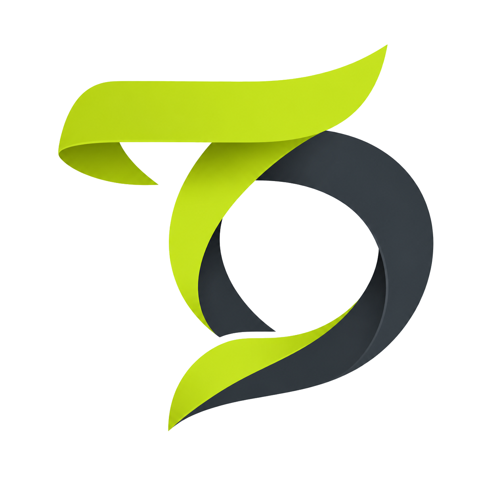

Windows
下载后运行，常驻系统托盘。

TokenDance看看今天，谁在和 AI 一起创造。
一个轻量的桌面客户端，汇总你的 AI 工具用量。
留在托盘里，与你的每一次创造同行。
一个客户端连接多种 AI 工具，无需分别安装扩展。
设计预览：尚未接入正式下载包，下载按钮暂不可用。
获取客户端 → 登录账号 → 确认采集 → 查看榜单
TokenDance 同步经过隐私过滤的用量记录。排行榜会展示头像、昵称、Token 和排名；详细资料页的公开设置单独管理。
了解数据与隐私 →从第一次接入，到读懂每一份用量。